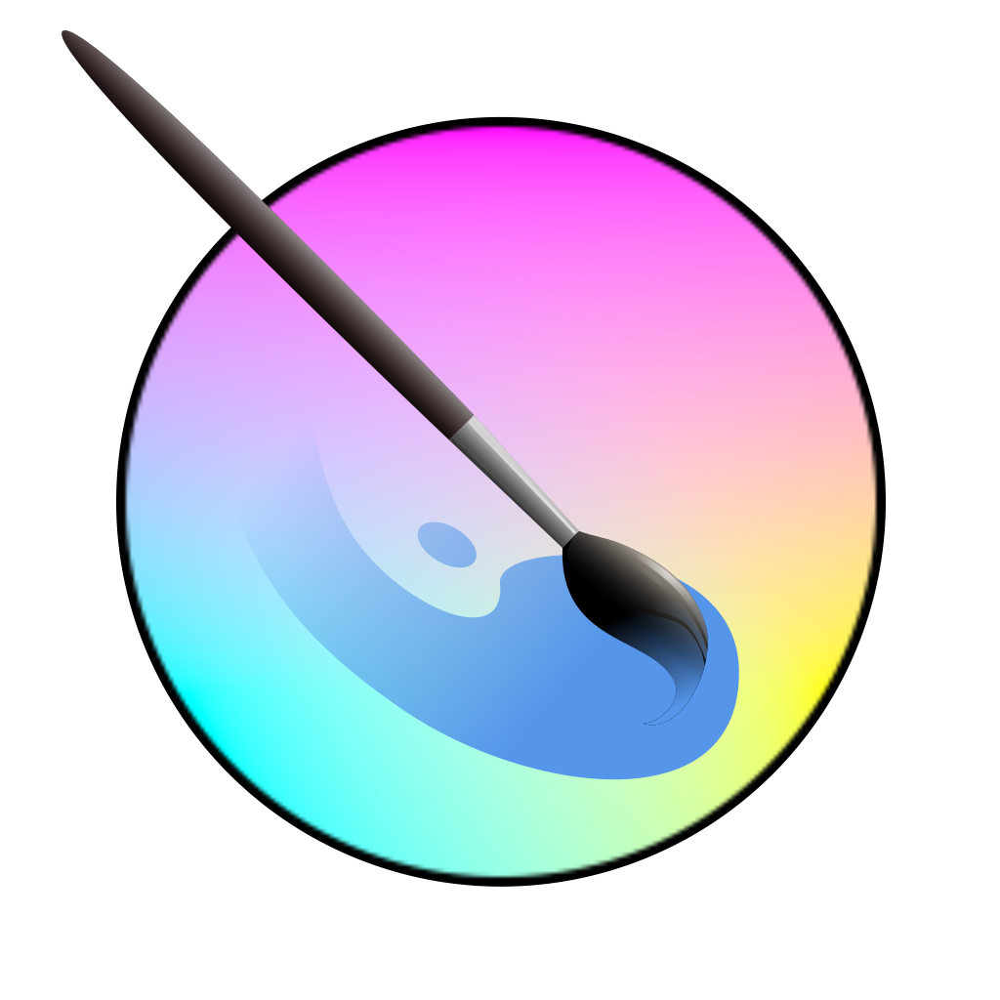

Curcuit-level formating tool

When I encounter with something that is very interesting, I definitely will google it, dig deeper to see its nature. That's how I met with blender, gimp, inkscape, photoshop, lightroom, linux OS, macOS, unity3D, notepad++, etc. When I setep back and take a look at the whole picture, there is no doubt that they are all productivity softwares 🤦♂️.
So, let's make a catalog! Shall we? This catalog is consists of three parts.
Years of collections, nice gadgets.
Put this in your bookmarks.
Get rid of the parts holding you back.
 Notepad++ is an open source text editor running in Windows environment.
Notepad++ is an open source text editor running in Windows environment.
It features:
- Syntax Highlighting and Syntax Folding.
- User Defined Syntax Highlighting and Folding: screenshot 1, screenshot 2, screenshot 3 and screenshot 4.
- PCRE (Perl Compatible Regular Expression) Search/Replace.
- GUI entirely customizable: minimalist, tab with close button, multi-line tab, vertical tab and vertical document list.
- Auto-completion: Word completion, Function completion and Function parameters hint.
- Tons of handy plugins.
- Macro recording and playback.
- even more...
Blender is more than just an open source 3D creation suite. It can be used to create 3/2D animation, or even to film an entire movie. And it has a tiny size: installer is less than 100MB.
It features:
- Blender has a revamped user interface. Tools, gizmos and a more consistent layout to make it easier to discover and use Blender's many features.
- EEVEE is a new physically based realtime renderer. It accelerates the process of 3D rendering.
- Nowadays, blender has a new, modern 3D viewpor.
- 2D animation. Blender's 2D drawing capabilities have been greatly improved.
- even more...
 Gimp is the free open source image editor available for macOS, windows, Linux.
Gimp is the free open source image editor available for macOS, windows, Linux.
It features:
- Customizable Interface. Every field worker can find his/her the most satisfied layout of the panels of tools.
- Numerous digital photo imperfections can be easily compensated for using GIMP.
- GIMP is ideal for advanced photo retouching techniques. Get rid of unneeded details using the clone tool, or touch up minor details easily with the new healing tool.
- The file format support ranges from the common likes of JPEG (JFIF), GIF, PNG, TIFF to special use formats such as the multi-resolution and multi-color-depth Windows icon files.
- even more...
Krita is an alternative to Gimp. The former focus more on painting with digital tablet.
It features:
- An intuitive user interface that stays out of your way. The dockers and panels can be moved and customized for your specific workflow.
- Have a shaky hand? Add a stabilizer to your brush to smoothen it out.
- Krita has the Pop-up palette. Quickly pick your color and brush by right-clicking on the canvas.
- You can customize your brushes with over 9 unique brush engines.
- even more...
MPC-HC is an light-weight media player for Windows. It is available for all common video or audio file formats.
It features:
- Lightweight. Watch movies on any SSE2 CPU, even on your old computer back from 2000.nd? Add a stabilizer to your brush to smoothen it out.
- Customizable. With its wide array of options, MPC-HC can be customized to fit almost any needs.
- All around player. MPC-HC can also be used as DVB player.
- even more...
What can you do with c programming language? A PDF reader? Nope, the SumatraPDF reader support even more file formats.
It features:
- Supports PDF, eBook (ePub, Mobi), XPS, DjVu, CHM, Comic Book (CBZ and CBR) file formats.
- Powerful, small, portable and starts up very fast.
- Simplicity of the user interface has a high priority.
- Supports many languages.
- Free and open source.
- even more...
 Audacity is an easy-to-use, multi-track audio editor and recorder for Windows, Mac OS X, GNU/Linux and other operating systems. Developed by a group of volunteers as open source.--audacityteam.org
Audacity is an easy-to-use, multi-track audio editor and recorder for Windows, Mac OS X, GNU/Linux and other operating systems. Developed by a group of volunteers as open source.--audacityteam.org
It features:
- Recording: Audacity can record live audio through a microphone or mixer, or digitize recordings from other media.
- Export / Import: Import, edit, and combine sound files. Export your recordings in many different file formats, including multiple files at once.
- Sound Quality: Supports 16-bit, 24-bit and 32-bit. Sample rates and formats are converted using high-quality resampling and dithering.
- Plugins: Support for LADSPA, LV2, Nyquist, VST and Audio Unit effect plug-ins. Nyquist effects can be easily modified in a text editor – or you can even write your own plug-in.
- Analysis: Spectrogram view mode for visualizing and selecting frequencies. Plot Spectrum window for detailed frequency analysis.
- Effects: Real-time preview of LADSPA, LV2, VST and Audio Unit (macOS) effects. Plug-in Manager handles plug-in installation and addition/removal of effects and generators from the menus.
- even more...
A free sound editor, DarkAudacity is the well known Audacity sound editor now with a darker more modern theme - and a few small tweaks. The audio engine underneath is the same audio engine. The same code powers it. --darkaudacity.com The main author wants to provide a different version of Audacity® based on the feedback received from users and a personal view. --fosshub.com
It features:
- The menus have been rearranged, but the functions you need are still there.
- The Sync-Lock button has gone. Use Time-Lock from the Tracks menu instead.
- Recording adds to the end of your track, unless you hold shift down when you click 'Record', in which case it adds below.
- You won't get 'stuck in pause' now. Many items that were previously forbidden in pause are now allowed, and end pause when you click them.
- Some toolbars are hidden by default. If you want them you need to use View->Toolbars to enable them.
- even more...
foobar2000 is an advanced freeware audio player for the Windows platform.--foobar2000.org Main features:Supported audio formats: MP3, MP4, AAC, CD Audio, WMA, Vorbis, Opus, FLAC, WavPack, WAV, AIFF, Musepack, Speex, AU, SND... and more with additional components. Gapless playback. Easily customizable user interface layout. Advanced tagging capabilities. Support for ripping Audio CDs as well as transcoding all supported audio formats using the Converter component. Full ReplayGain support. Customizable keyboard shortcuts. Open component architecture allowing third-party developers to extend functionality of the player.--foobar2000.org
It features:
- Supported audio formats: MP3, MP4, AAC, CD Audio, WMA, Vorbis, Opus, FLAC, WavPack, WAV, AIFF, Musepack, Speex, AU, SND... and more with additional components.
- Gapless playback.
- Easily customizable user interface layout.
- Advanced tagging capabilities.
- even more...
Avidemux is a free video editor designed for simple cutting, filtering and encoding tasks. It supports many file types, including AVI, DVD compatible MPEG files, MP4 and ASF, using a variety of codecs. Tasks can be automated using projects, job queue and powerful scripting capabilities. Avidemux is available for Linux, BSD, Mac OS X and Microsoft Windows under the GNU GPL license. The program was written from scratch by Mean, but code from other people and projects has been used as well. Patches, translations and even bug reports are always welcome.--avidemux.org
It features:
- Detect and warn when cut points in H.264 video streams may result in playback issues despite being on keyframes
- Audio:Support WMAPRO audio codec for decoding
- FFmpeg:Update to the 4.1.4 release
- even more...
Award-winning open-source video editing software. An easy to use, quick to learn, and surprisingly powerful video editor.--openshot.org
It features:
- Cross-Platform: OpenShot is a cross-platform video editor, with support for Linux, Mac, and Windows. Get started and download our installer today.
- Trim & Slice: Quickly trim down your videos, and find those perfect moments. OpenShot has many easy ways to cut your video.
- Animation & Keyframes: Using our powerful animation framework, you can fade, slide, bounce, and animate anything in your video project.
- even more...
Professional Photo Management with the Power of Open Source. DigiKam is an advanced open-source digital photo management application that runs on Linux, Windows, and MacOS. The application provides a comprehensive set of tools for importing, managing, editing, and sharing photos and raw files.--digikam.org
It features:
- digiKam organizes photos, raw files, and videos into albums. But the application also features powerful tagging tools that allow you to assign tags, ratings, and labels to photos and raw files. You can then use filtering functionality to quickly find items that match specific criteria.
- The application provides a comprehensive set of editing tools. This includes basic tools for adjusting colors, cropping, and sharpening as well as advanced tools for, curves adjustment, panorama stitching, and much more. A special tool based on Lensfun library permit to apply lens corrections automatically on images.
- even more...
RawTherapee is a powerful, cross-platform raw photo processing system, released as Free Software (GPLv3). It is designed for developing raw files from a broad range of digital cameras and targeted at users ranging from enthusiast newcomers who wish to broaden their understanding of how digital imaging works to professional photographers. RawTherapee provides a powerful suite of tools for you to produce amazing photos and showcase your creativity.
It features:
- High Image Quality: Non-destructive, 32-bit (floating point) processing engine, modern demosaicing algorithms, and advanced color+detail editing bring you the best tools to develop images of the highest quality from your raw files (including High Dynamic Range DNG).
- Outstanding Raw Support: RawTherapee gives you best-in-class demosaicing, including using two demosaicing algorithms on the same image, compositing pixel-shift raw files with automatic ghost masking, working with multiple-frame raw files, dark frame subtraction, flat field correction, and hot/dead pixel correction!
- Freedom for Free: RawTherapee is Free and Open Source software. This means you can use it free of charge, wherever you like and however you like as long as you abide by the copyleft GPLv3 license. Download the source code, modify it, and help improve it! We believe in Free Software. ♥ It is cross-platform - you can use it on Linux, macOS, or Microsoft Windows. It is also international and available in over 15 languages!
- even more...
 GifCam is easy and fun animated gif making app.GifCam has a nice idea where the app works like a camera that stays on top of all windows so you can move it and resize it to record your desired area.
GifCam is easy and fun animated gif making app.GifCam has a nice idea where the app works like a camera that stays on top of all windows so you can move it and resize it to record your desired area.
It features:
- GifCam is practical While recording whenever GifCam finds the previous frame is same as the new recorded one it automatically adds delays (milliseconds the frame stays on screen) instead of adding a new frame and increasing gif size.
- GifCam comes with simple and powerful frames editing, To delete frames/add or remove delays, click on “Edit” button then right click on the frame you want to edit :
- When you done recording and editing, you can save your gif in 5 color reduction formats.
- GifCam can be used in many creative ways like: creating an animated painting using MS Paint (264 frames just 17.4 KB !!)
- or delivering an animated message in notepad (123 frames just 13.4 KB !!)
- or creating a retro gif (monochrome color redaction) from YouTube video (41 frames 219 KB)
- even more...
 Rufus is a utility that helps format and create bootable USB flash drives, such as USB keys/pendrives, memory sticks, etc.
Rufus is a utility that helps format and create bootable USB flash drives, such as USB keys/pendrives, memory sticks, etc.
It features:
- create USB installation media from bootable ISOs (Windows, Linux, UEFI, etc.)
- work on a system that doesn't have an OS installed
- flash a BIOS or other firmware from DOS
- run a low-level utility
- Supports many languages.
- Online update
- even more...
This project aims to offer a simple cross-platform application for cropping PDF files. A simple user interface lets you define exactly the crop-region by fitting a rectangle on the visually overlaid pages.
It features:
- Crop PDFs GUI based
- Crop different regions into separate pages
- Crop multi column/pages
- even more...